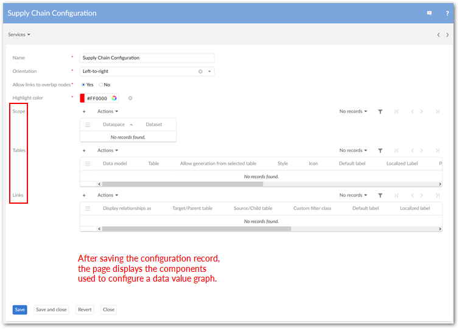
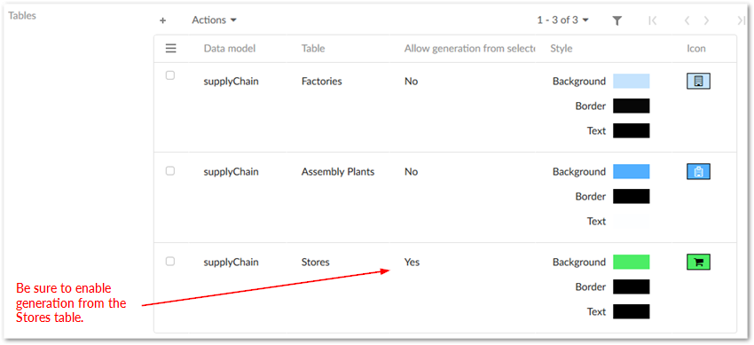
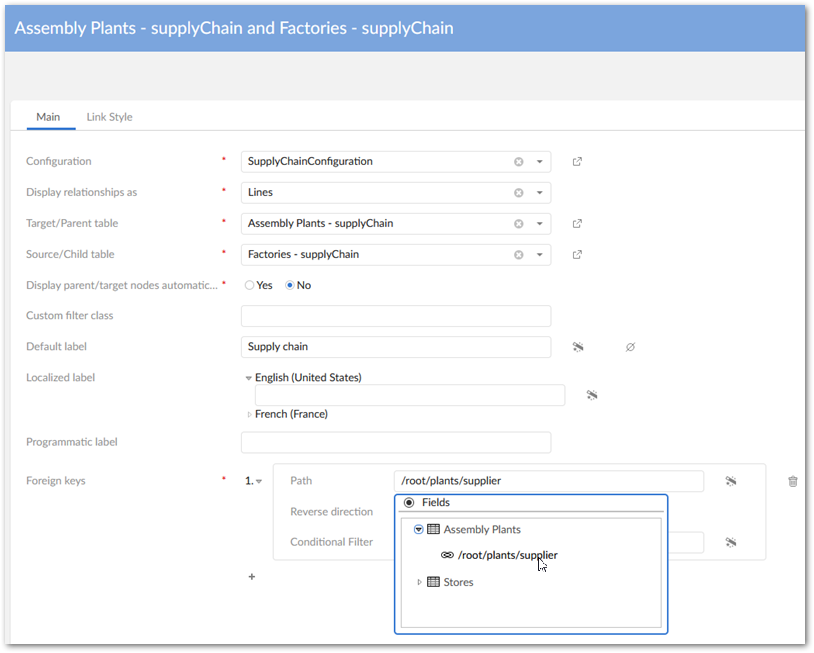
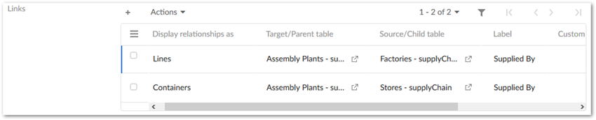
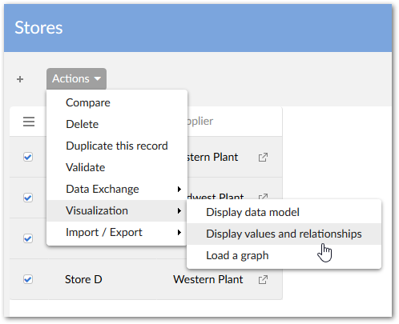
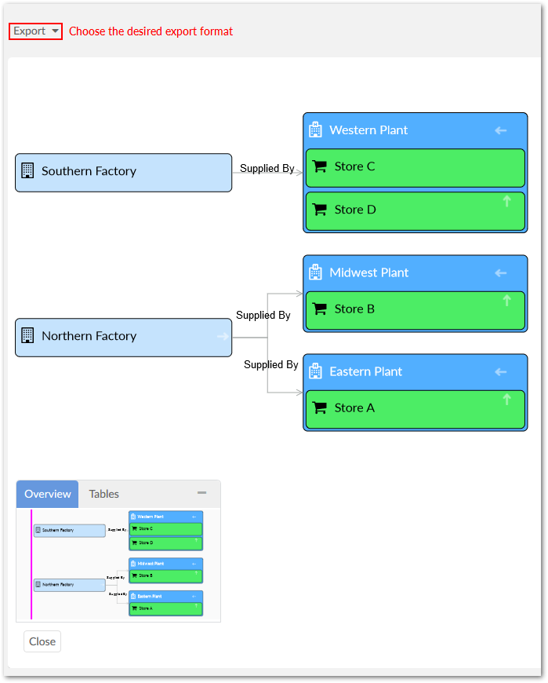

This part of the tutorial will give you hands on experience creating a data value graph configuration. It demonstrates how add-on configuration options translate to generated graphs. If you would prefer more generic, high-level instructions, see Configuring graphs.
We will use our generated graph to prove which factory is producing the defective parts. Additionally, we will export a graph showing our findings to share with management.
The following sections describe how to create a data value graph configuration and export a generated graph:
To begin, let's create a configuration that determines the data and relationships included in the graph, and how this information displays.
Navigate to Administration > User interface > TIBCO EBX® Data Model and Data Visualization Add-on > Value and relationship graphs > Configuration and create a new record. Leave the Orientation property at its default of Left-to-right. After saving, but not closing, the page displays the following configuration sections required for graph generation: Scope, Tables, and Links.

More about graph configurations: Data value graph configurations act as a container for graph settings. The settings determine accessibility, content, and how content displays. When multiple graph configurations include the same table, users can choose the configuration used to generate a graph. Although not demonstrated in this tutorial, a Scope restricts the dataset from which users can access the configuration.
We now need to decide which tables contain the data relevant to the supply chain issue (described in the tutorial's Prerequisites and setup), and link them with our graph configuration. To accomplish this, we will create table configurations that associate tables with our graph configuration. To create the table configurations:
On the configuration page, click the icon in the Tables group to create a new record.
Choose the table using the Data model and Table fields. When creating the Store table, be sure to set the Allow generation from selected table property to Yes. This setting determines whether we can generate a data value graph from the table's Actions menu. When disabled, the option does not display as a menu option.
Optionally, change each table's style and icon. These features make it easier to differentiate between elements in the generated graphs.
Save and close. We will repeat the process for each table in the tutorial's sample data model. When finished, your Tables section should resemble the following:

The data model graph generated in the previous chapter of the tutorial shows us which relationships we need to drill into to find the origin of the problem. By adding these foreign key relationships to the graph configuration, we determine which data values display. This will allow us to trace the supply chain to find the source of the defective parts. All we have to do is use link configurations to tell the add-on which relationships to include.
What are link configurations? Each link configuration:
uses paths in the data model to identify one or more foreign key relationships.
defines the type of component the add-on uses to show this relationship when users generate a graph. The settings allow relationships to display as lines, or as parent and child containers (more on this below).
sets the context for the relationship by indicating which table—linked by the foreign key—is the:
Parent or child: when setting the display type to container, nodes containing data values are nested within each other—parent nodes are rendered as the larger, outer nodes and children nodes within these.
Target or source: when using line for the display type, nodes containing data values are linked by lines with an arrow that indicates relationship direction.
specifies the data value graph configuration to which these settings apply. This setting also determines which tables are available to link.
By referring to the data model graph generated earlier, we quickly see which relationships are needed. The following table summarizes the link configuration settings required to trace the defective parts to their originating factories.
Relationship type | Relationship and label | Foreign Key Path |
|---|---|---|
Lines |
| /root/plants/supplier |
Containers |
| /root/store/supplier |
For each row in the table above, we will create a link configuration record populated with the row's values:
Create a new record in the Links group.
We can reference the exported data model graph to determine which links should be used. Alternatively, the table above lists the configuration settings. When entering the foreign key path, use the wizard as shown in the following image:

Repeat the first two steps to add the second link configuration and populate it with the correct table values.
Be sure to save and close all configuration records.
When finished, your Links configuration section should look like the following:

Now, it's time to follow the data trail. We can generate and share our graph by navigating to the Supply Chain dataset in EBX® and:
Opening the Store table and selecting the records to display in the graph. The reports received about the returns have only been coming from stores A and B, but we would like to include all stores in the report to management; just to back up our findings. So, we will select all records in the Store table.
From the table's Actions menu, select Visualization > Display data using configuration. Note that if multiple configurations existed for this table, this is where we could choose which to display.

Once the graph has rendered, we can follow the data to discover the source of faulty components. Right-click the Store D node and expand Assembly Plants, then click the related assembly plant and expand its factories. We will repeat this process for Store B and A. As the following image shows, stores A and B are supplied by the Eastern and Midwest plants, respectively. This means the faulty parts must originate in the Northern Factory—the only factory to supply these plants. Congratulations, on discovering the source! Only one thing remains.

We can share our findings by simply clicking Export to download a PDF or PNG that we can include in our report to management.